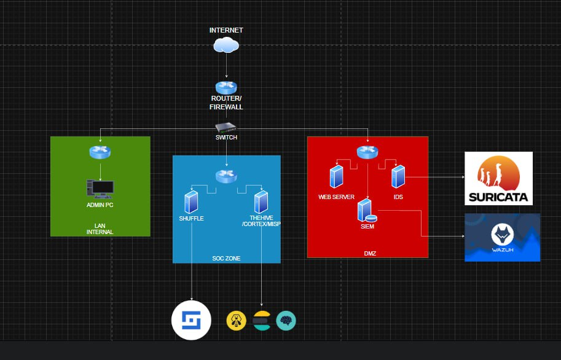
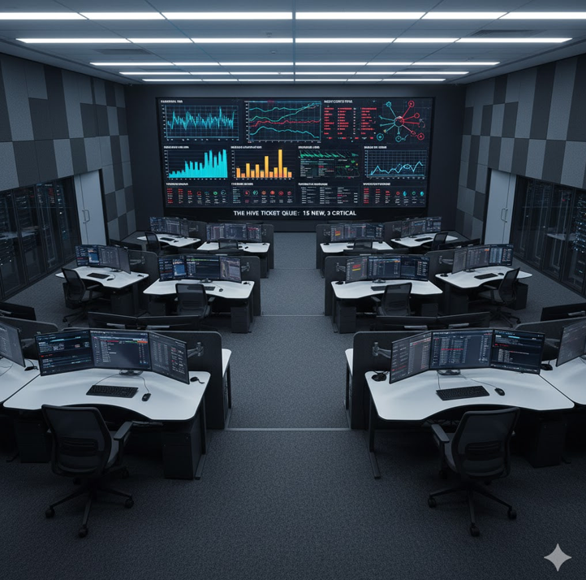

Keamanan siber yang tangguh dimulai dari arsitektur jaringan yang kuat. DopperCSIRT menerapkan konsep network segmentation ketat untuk meminimalkan blast radius serangan dan menjaga integritas data investigasi.

Diagram logis tiga zona pertahanan DopperCSIRT.
DMZ – Zona Merah
Berisi web server publik yang diproteksi Suricata IDS dan kolektor log Wazuh SIEM untuk deteksi intrusi real-time. Serangan ditahan di zona ini agar tidak menjalar.
SOC Zone – Zona Biru
TheHive & Cortex: Manajemen kasus dan analisis forensik.
Area eksklusif administrator jaringan dengan akses terpisah penuh dari SOC dan DMZ sehingga kontrol tetap aman meski zona lain dalam mitigasi.
Dengan segmentasi tiga lapis ini, data intelijen tetap steril dan layanan publik terlindungi.
Facilities / Inside Dopper
Mengintip Fasilitas Command Center DopperCSIRT
Kecepatan respons menuntut SOC fisik yang siap 24/7. Command Center kami dirancang untuk efisiensi tinggi dan kolaborasi terkendali.

Video wall dengan live threat map, metrik server, dan antrean tiket TheHive.
Centralized Video Wall
Menampilkan live threat map, kesehatan server, serta tiket TheHive (contoh: “15 NEW, 3 CRITICAL”) sehingga seluruh analis berbagi situational awareness yang sama.
Ergonomic Analyst Workstations
Konfigurasi multi-monitor memungkinkan Tier 1/2 membuka log collector, feed intel, dan kanal komunikasi secara paralel untuk menurunkan MTTD.
Secure & Collaborative Environment
Layout open-plan terfokus memudahkan koordinasi saat major incident, namun tetap menjaga ketenangan untuk deep dive analysis.
Fasilitas ini menjadi benteng pertahanan digital tempat kami menjaga aset organisasi Anda sepanjang waktu.
Incident Response Lifecycle
Preparation – tabletop exercise triwulanan
Identification – MITRE-based detection rules
Containment – segmentasi VLAN darurat
Eradication – rebuild melalui golden image
Recovery – controlled rollout dengan canary
Lessons Learned – RCA + KPI MTTR
Threat Intelligence Pipeline
Pipeline mengkonsolidasikan sumber OSINT, ISAC, dan internal telemetry.